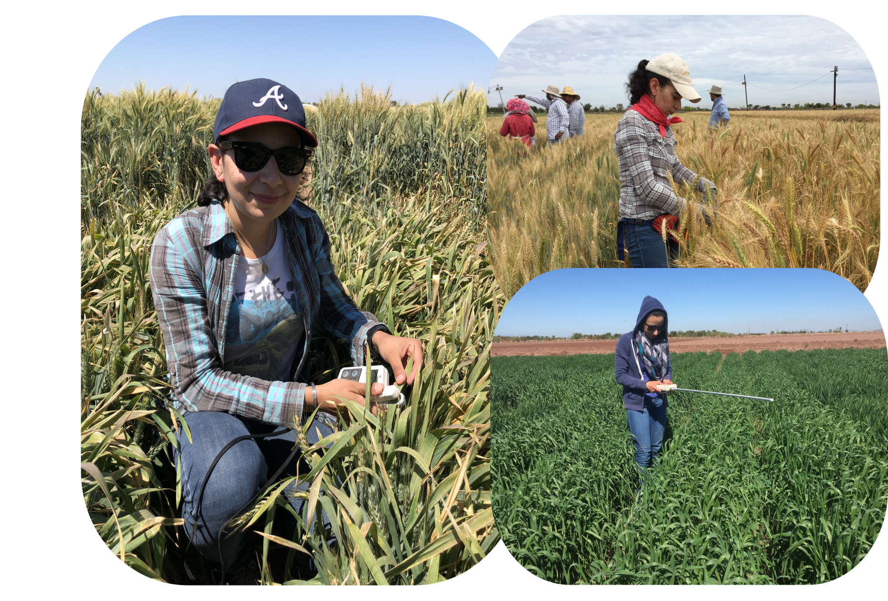

During my undergraduate studies I took several courses in which I aquired experience using several molecular biology techniques. These skills allowed me to complete my undergraduated thesis project titled: "Design and construction of vectors for reducing the content of lignin by antisense gene expression in sorghum (Sorghum bicolor (L.) Moench) plants with biotechnological potential". The objective was to obtain a sorghum plant, in which biomass digestion will be easier to obtain sugars for the production of second generation bioethanol. Results from these project were the generation of several bacterial plasmids (six in total), with the incorporation of two genes involved on the synthesis of lignin (COMT & CAD) and one plant vector in which genes were cloned in an antisense form for later to be use in plant transformation.
For seven months I did an intership at the Development&Research department in Qualtia Alimentos in which my role consisted in the development (formulation & elaboration) of different prototypes of sausages & hams. When the product was finisehd different test were made such as: physicochemical properties (percentage of fat, humidity, proteín, salts, syneresis) and sensory evaluation (appearance, odour, texture, taste) in order to see if the prototype was ready to be produce in large scale.
Before finishing my bachelor and just after I finished my intership at Qualtia I spend nine months at DArT (Diversity Arrays Technology). This is an Australian company which have develop several molecular marker technologies (DArT & DArTseq). This consisted in learn how to genotype by sequencing (GbS) using Illumina® technology. This goes from handling a LIMS (Laboratory Information Management System) in order to keep track of every sample that was sequenced to the use of different molecular biology techniques (DNA extraction, digestion & ligation, PCR, electrophoresis, assembly of cBOT and HiSeq 2000) in order to generate thousands of molecular markers. This internship formed part of the knowledge required for my first job.
During two year and a half I worked at SAGA
(Genetic Analysis Service for Agriculture) a service that provides genomic profiles. My work consisted in
processing (1,600-2,400 approx. per week) DNA samples in order to prepare them for sequencing in the DArTseq platform.
The preparation of this samples goes from making sure that the samples have good
DNA quality and quantity, if everything looks good then samples will be submitted to a digestion/ligation and PCR
reaction which technically consist in cutting+pasting and generation million of copies from representative
information from the samples. This will be the input for the generation of 200,000 SNPs and 200,000 PAVs molecular markers.
The workflow involves wet (molecular biology techniques) and dry (manage of LIMS) lab work. When the sequencing run is
finished, a primary analysis is run in order to verify the data generated by the HiSeq (using Illumina®softwares & Excel),
which needs to meet quality control in order to launch a secondary analysis in which thousands of
molecular markers will be generated.

In December 2019 I passed my viva for my PhD at The University of Nottingham. Overall during 2 seasons field trials took place at NW
Mexico (spring wheat) and at The University of Nottingham (winter wheat) where phenotypic measurements at anthesis+7 days and harvest were
carried. Results were analysed to find the different associations found among the different traits measured and as well molecular markers
which are expected to help breeding programs suggesting new venues to boost yield increasing spike partitioning index, harvest index and
grain number.
During my studies, I had the opportunity to work as an exam invigilator at The University of Nottingham either as a leader or assistant,
student helper during Open Days (2017 & 2018) and International Welcome Week (2018) and as well as a demonstrator on laboratory practices.
This has allowed me the possibility of interacting with students sharing my knowledge, exchange of ideas, etc.